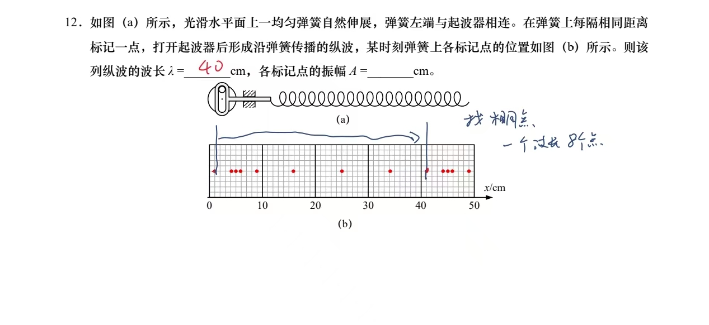

先看原题
如图（a）所示，光滑水平面上一均匀弹簧自然伸展，弹簧左端与起波器相连。 在弹簧上每隔相同距离标记一点，打开起波器后形成沿弹簧传播的纵波， 某时刻弹簧上各标记点的位置如图（b）所示。则该列纵波的波长 λ = ____ cm， 各标记点的振幅 A = ____ cm。

原题照片（横轴单位 cm）。
看弹簧怎样动
左端的驱动杆来回推拉弹簧的左端。
盯住一个红点：它只在原地附近左右动，不会跟着向右跑。再看疏密：密的地方从左端冒出来，一路向右传；还没传到的地方保持自然伸展。
停到题图，再看波长和振幅
弹簧还在动。点下面的按钮，让它正好停在题图（b）那一刻。
最靠右的两个红点之间，点的排布正好重复一次：从 1 cm 到 41 cm，相差 40 cm。
λ = 40 cm